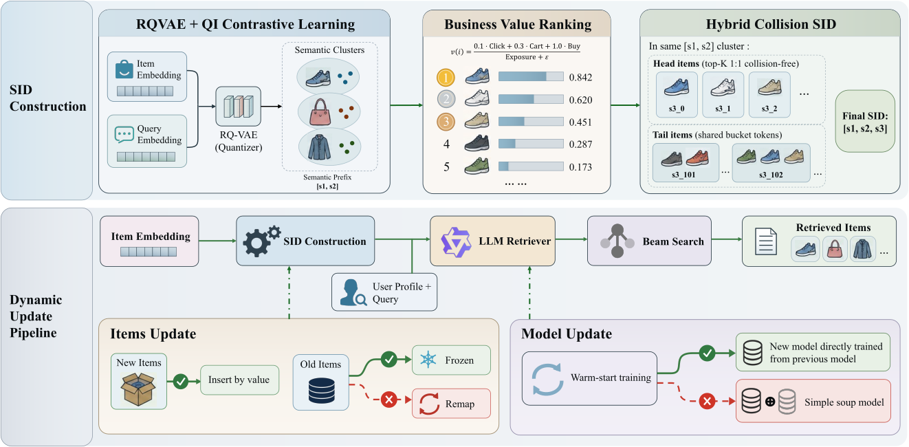
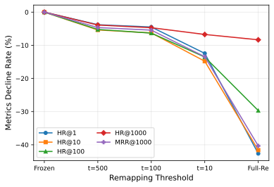
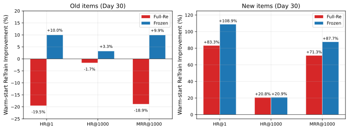
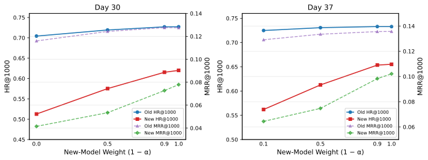

不要重写 SID 映射：动态电子商务搜索中生成式检索的拓扑保持
摘要
生成式检索为每个物品分配一个离散的语义标识符（SID），并通过自回归生成 SID 序列来检索物品。在电子商务等动态环境中，新物品持续到达，业务信号不断演变，需要定期更新 SID 到物品的映射和模型，以保持检索的时效性。然而，每次映射更新都可能使检索器模型已经学到的搜索路径失效，而映射变化程度与检索质量之间的定量关系尚未被系统性地刻画。我们通过对 67 天大规模电子商务搜索日志进行大量受控实验来研究这一问题，并获得三个核心发现。（1）SID 语义漂移会导致严重的检索性能下降，而这种下降可能被较大的束宽所掩盖：映射更新使 HitRate 下降 41.78-62.05%（束宽 1），但仅下降 8.33-10.85%（束宽 1000），因为冗余的候选生成掩盖了漂移的真实严重程度。（2）发生变化的 SID 比例与检索质量严格单调相关：随着旧物品 SID 的重新映射比例从 0% 增加到 72.75%，HitRate 单调下降，降幅最高可达 42.66%，对应束宽 1。在相同的热启动训练流程下，完全重映射仍然显著劣于保持策略，这表明模型已经内化了 SID 空间的隐式拓扑结构，且仅靠短预算的持续训练无法修复拓扑破坏。（3）SID 拓扑保持原则使最简单的热启动策略也极为有效，并且从先前检查点微调得到的模型优于朴素的模型汤（model souping）：固定旧物品 SID、插入新物品，并从先前模型进行热启动，可使旧物品 HitRate 提升约 10%、新物品 HitRate 提升约 109%，并在两个不重叠的更新周期上得到验证。这些发现可提炼为一条简洁的部署原则：插入新物品，冻结旧物品；尽可能热启动，否则冻结；绝不更改模型已经学到的 SID。该原则在移动电子商务平台 TmallAPP 上进行的三周在线 A/B 测试显示 UCTCVR +0.29%、GMV +1.16%。
1. 引言
生成式检索将物品检索重新表述为序列生成任务：给定用户查询，语言模型自回归地生成一个短的离散词元序列，称为语义标识符（SID），并通过外部映射将其解析为一个或多个物品。自可微分搜索索引 (Tay et al., 2022) 被提出以来，这一范式已在许多场景中展现出优势 (Cao et al., 2021; Rajput et al., 2023; D’Amico et al., 2026; Deng et al., 2025; Chen et al., 2025; Zhu et al., 2026)，提供了端到端训练、免去大规模向量索引维护以及多目标排序信号的自然集成。
除了初始的物品 SID 构建之外，动态环境中更为紧迫的挑战是如何随时间保持 SID 到物品的映射。在电子商务搜索中，检索环境高度动态，物品集每日扩张：新物品上架、价格波动、转化率演变，所有这些都需要定期更新检索器模型和 SID 到物品的映射。特别是在生产级系统中，SID 编码通常包含业务价值维度 (Ling et al., 2026)，使得映射不可避免地随时间变化。模型在历史映射上训练后，可能在推理时生成相同的 SID，但该 SID 在更新后的映射下现在解析为不同的物品——我们将这一现象称为 语义漂移。更深层的问题是，先前的工作主要追求无冲突的 SID 分配；然而在动态环境中，持续增长的物品集不可避免地会与现有物品产生冲突。强制进行完全重映射以消除这些冲突会改变许多现有物品的 SID，从而触发严重的语义漂移。
在实践中，语义漂移很容易被忽视。在较大的束宽下，即使高概率路径已经过时，模型仍可通过探索许多替代分支来恢复目标物品；因此，在单一宽束下的离线评估可能表明映射更新是安全的，而在延迟受限的服务中采用窄束则会遭受大得多的损失。同时，人们常假设重新训练可以修复刷新后的映射。然而，这一假设忽略了模型在训练期间已经编码的结构知识，特别是已学到的 SID 空间拓扑结构。
这些考虑引出了若干面向部署的问题。SID 映射刷新会造成多大损害，观察到的损害如何依赖于束宽？检索质量是否会随 SID 发生变化的旧物品比例而系统性变化？热启动训练能否修复重映射造成的损害，还是系统应保持旧 SID 拓扑结构、仅插入新物品？
我们没有提出另一种算法补救方案，而是退后一步，通过对 67 天大规模电子商务搜索日志进行大量受控实验，从经验上回答这些问题。与先前针对基线评估单一提出方法的研究不同，我们将映射策略作为实验因子进行系统性变化，涵盖从完全重映射到完全冻结的完整范围。通过独立控制训练策略，这一设计能够清晰地将映射引起的损害与训练引起的修复区分开来。我们的贡献如下：
-
•
语义漂移的损害与掩盖效应。 我们系统性地量化了 SID 映射演变所导致的性能下降，并揭示宽束评估掩盖了漂移的真实严重程度。具体而言，虽然映射更新在束宽 1000 时导致 HitRate 和 MRR 显著下降，但在束宽 1 时下降要严重得多。
-
•
单调效应与拓扑不可修复性。 我们发现，发生变化的旧物品 SID 比例 与检索质量之间存在严格的单调负相关关系。在相同的热启动预算下，完全重映射仍然显著劣于保持策略，这表明模型已经内化了 SID 空间的隐式拓扑结构，且简单的热启动机制无法修复拓扑破坏。
-
•
拓扑保持原则与最优更新策略。 我们发现拓扑保持是比单纯重新训练更根本的决定因素，并提出了一种可在工业规模上实施的简单增量热启动策略（冻结旧物品、插入新物品、定期对模型进行热启动）。实验显示旧物品上约提升 9%、新物品上约提升 109%；三周在线 A/B 测试得到 UCTCVR +0.29%、GMV +1.16%。
有四个发现格外反直觉。第一，在宽束下进行的评估可能掩盖绝大部分实际的漂移严重程度，这意味着许多生产系统可能是在虚假的安全感下运行。第二，重映射比例与质量损失之间的关系严格单调，在完全重映射与完全冻结之间不存在有用的中间地带。第三，热启动训练——大多数持续学习方法所假设的默认修复策略——无法从拓扑破坏中恢复：热启动后的完全重映射仍然不如不重新训练的冻结基线。第四，与其通过混合新旧模型来创建“模型汤”，不如直接使用从旧模型训练得到的新模型更为有效。总而言之，这些发现表明，先前工作一直在解决的问题，即如何修复映射引起的损害，最好通过从一开始就不产生损害来解决。
2. 相关工作
2.1. 生成式检索
可微分搜索索引 (Tay et al., 2022) 和 GENRE (Cao et al., 2021) 确立了直接生成文档或实体标识符的范式，以自回归序列生成取代最近邻搜索。此后，生成式检索已被应用于文档和段落检索 (Tay et al., 2022; Cao et al., 2021)、播客发现 (D’Amico et al., 2026)、推荐排序 (Rajput et al., 2023; Singh et al., 2024; Deng et al., 2025) 和电子商务搜索 (Chen et al., 2025; Zhu et al., 2026; Ling et al., 2026; Zhan et al., 2026)。TIGER (Rajput et al., 2023) 证明了残差量化语义标识符能够有效捕捉物品语义用于检索，自其提出以来，大量工作开始在电子商务中采用语义 ID。OneRec (Deng et al., 2025) 和 OneSearch (Chen et al., 2025) 提出了端到端框架。在电子商务搜索场景中，CQ-SID (Zhu et al., 2026) 引入了查询-物品对比学习和面向搜索相关簇的 EG-GRPO。Ling 等人 (Ling et al., 2026) 将业务价值排序编码到 SID 分配中，Zhan 等人 (Zhan et al., 2026) 提出了一个统一的生成式框架，将检索和粗排集成在单一模型内。这些工作聚焦于初始模型设计；不断演变物品集合在更新时的影响仍是一个开放问题。
2.2. 语义标识符构建
语义标识符的质量是生成式检索性能的一阶决定因素。基于 RQ-VAE 的方法 (Rajput et al., 2023; Chen et al., 2025; Zhu et al., 2026) 通过对物品嵌入进行残差向量量化来产生层次化编码。其他方法包括 RQ-KMeans (Deng et al., 2025)、多标识符预训练 (Zheng et al., 2025) 和自改进词元化 (Chen et al., 2024)。一个关键关注点是量化如何扭曲邻域结构：拓扑感知词元化 (Liu et al., 2026a)、资格感知冲突处理 (Hu et al., 2026) 和拓扑保持词元化 (Zheng et al., 2026) 都表明标识符结构会影响下游检索。混合语义/哈希标识符 (Liu et al., 2026b) 和约束解码 (Su et al., 2026) 解决了服务效率问题，而 FORGE (Fu et al., 2026) 为评估 SID 构建方法提供了系统性基准。DREAM (Guan et al., 2026) 进一步将过早的静态 SID 固化识别为冷启动瓶颈，并提出反事实对比学习以实现渐进式细化。这些工作聚焦于构建更高质量的初始 SID；然而，即使初始设计有效，后续映射演变对检索质量的影响仍未被充分刻画。
2.3. 动态更新与持续学习
DSI++ (Mehta et al., 2023) 将文档添加视为持续学习，并记录了顺序更新过程中的灾难性遗忘。CLEVER (Chen et al., 2023) 和 PromptDSI (Huynh et al., 2025) 在有限回放的条件下处理动态语料库。更近期的工作直接针对语义 ID 过时问题：Baikalov 等人 (Baikalov et al., 2026) 提出双射对齐映射以缓解协同 SID 漂移，Feng 等人 (Feng et al., 2026) 引入基于漂移置信度的选择性词元化以尽量减少不必要的编码变化。替代范式完全避免权重更新：Den 等人 (Den et al., 2026) 将增量检索重新表述为上下文生成问题，Mekonnen 等人 (Mekonnen et al., 2026) 将参数化记忆头附加到冻结模型上，Huynh 等人 (Huynh et al., 2026) 使用可动态扩展的 LoRA 专家。这些方法通过日益复杂的算法设计（如对齐求解器、选择性重新分配和参数高效适配器）来缓解映射过时问题。然而，这些方法大多引入了额外的架构复杂性。
尽管近期方法已认识到漂移问题并提出了算法补救方案，但尚无研究将映射策略作为独立的实验因子，以区分映射变化本身造成的损害与修复算法的有效性。发生变化映射的比例与检索质量之间的单调关系也尚未被确立。更根本地，一个更简单却更前提性的问题——映射是否应该被改变——在很大程度上被忽视了。

3. 方法
我们研究当商品集合扩大且商业价值信号发生变化时，如何更新部署在电商搜索中的生成式检索系统。在真实环境的长期运行中，随着新商品到达以及现有商品商业重要性的变化，已部署的检索器会逐渐过时。直接刷新Item-SID映射以追赶变化，会破坏模型学习到的自回归解码路径，导致检索质量下降。我们的目标是确定能够容纳新商品和不断演化的价值信号、同时尽可能保持现有商品已学习映射稳定的更新策略，避免完整的重建与重训流程。
3.1. 问题形式化
令表示商品集合。每个商品被分配一个三词元语义标识符
| (1) |
给定查询和用户画像，检索模型以自回归方式生成目标商品的SID，并通过最小化以下目标进行训练
| (2) |
在推理时，束搜索产生前K个SID序列，服务时的映射将每个序列解析为一个或多个商品。
检索器通过其词元嵌入和输出分布，本质上与SID空间绑定。令为用于标注训练数据的映射，为推理时的映射。当时发生漂移事件。我们在旧商品上将其程度度量为
| (3) |
在实验中，我们将观测到的重映射比例记作，并在旧商品集合上评估。
核心张力在于稳定性与新鲜度之间。若干常规操作都可能触发映射漂移：刷新基于价值的位置以跟踪变化的市场条件；在大批量新商品改变码本后重新训练RQ-VAE或其他商品到SID的聚类模型；或者更一般地，任何将现有商品重新分配到不同SID的过程。这些操作中的每一项都会使学习到的部分映射失效。与扁平的类别标签不同，生成式检索模型中的每个SID都对应一系列自回归解码决策：模型首先选择，然后选择，以为条件，依此类推，直到产生完整标识符。因此，每个Item-SID关联都不是单个标签，而是通过树状输出空间的一条已学习解码路径。当映射更新将商品重新分配到不同SID时，它不仅仅重新标记训练数据；它会在先前学习到的路径上重新分配输出概率，可能使解码树的整个分支失效。拓扑保持，即保持商品到SID的分配不变，确保这些已学习路径仍然有效。宽束搜索可能通过探索额外分支部分补偿漂移，而窄束搜索更早做出决定，因而更脆弱。
3.2. SID构建
前两个词元构成语义前缀，其通过使用在CQ-SID查询-商品（QI）对比框架(Zhu et al., 2026)下训练的RQ-VAE对商品内容嵌入进行量化而获得。QI目标在标准VQ-VAE重建损失和承诺损失的基础上增加了一个双向InfoNCE项，在共享嵌入空间中对齐商品内容和查询表示，从而使所得码本捕获与搜索相关的语义簇，而不仅仅是内容邻域。码本大小设为8192x8192。
在每个语义前缀内，第三个词元编码商业价值先验。遵循(Ling et al., 2026)，我们计算
| (4) |
其中表示商品的曝光次数，、和分别表示点击、加入购物车和购买次数。每个前缀内的商品按排序，使得第三级词元直接反映商业重要性。
混合碰撞感知分配。
在持续摄入的生产商品集合中，每个语义前缀下的商品数量随时间单调增长。因此，在有限词表内维持双射的商品到词元映射是不可行的：随着新商品累积，无论初始码本大小如何，碰撞（多个商品共享同一标识符）都不可避免。我们不是试图通过不断扩展词表来消除所有碰撞，而是采用混合碰撞感知（HC）设计，将精确解析集中在最重要的地方。对于每个前缀，商品按排序，前个商品获得唯一的第三级词元，即，对应于；其余商品以固定大小分组共享桶标识符。我们设，并为尾部最多分配1024个额外碰撞桶。作为参考，全稀疏（FS）设计为每个商品分配一个唯一标识符，最多需要8192个第三级桶。HC为高价值头部保留精确解析，同时优雅地容纳长尾。
非侵入式新商品插入。
一旦新商品积累足够曝光以有资格进入商品池，它首先从RQ-VAE量化器获得语义前缀，然后被插入其对应簇的价值排序中。该商品直接插入其价值排名位置，无论该位置落在前头部还是碰撞分桶的尾部。前的专用分配仅在训练时的SID集合中维护；在插入时，落入头部的新商品可能与现有商品共享先前专用的词元，且不修改任何旧商品的SID。这确保新商品插入对现有SID空间零影响。
3.3. 检索器模型
3.4. 更新策略
每个更新周期提出两个独立决策：哪些商品获得新SID（映射策略），以及是否重训模型以适应更新后的映射（训练策略）。我们有意聚焦于简单、可解释的选项，而非复杂的持续学习方法，原因有二。第一，生产系统更青睐可靠、可调试的解决方案，而非算法复杂性。第二，由于自回归检索器学习查询到SID路径的关联，任何映射变化都会在结构上使这些已学习关联的一部分失效；因此映射策略预计是主导因素，而训练过程起辅助作用。
映射策略。
我们考虑三种跨越稳定性–新鲜度谱系的策略。全量重映射（Full-Re）使用最新价值排名为每个前缀内的所有商品重新分配第三级词元；大量终端词元分配发生变化。冻结映射保持每个旧商品的SID不变；符合条件的新商品在其RQ-VAE前缀下获得可用的唯一或共享桶词元，而不修改任何现有分配。阈值重映射在两者之间插值：仅当旧商品的排名位移超过阈值时才重映射该商品，
| (5) |
将从变化到，描绘出从全量重映射到冻结映射的连续谱，使我们能够研究重映射比例与检索质量之间的剂量–响应关系。
训练策略。
给定任何映射策略，模型要么保持不变（不重训），要么从先前检查点继续（热启动）并在以更新后映射标注的累积新查询–SID对上进行训练。热启动训练使模型能够学习涉及新插入商品的关联，并在当前映射下强化现有关联。在热启动更新期间，仅重新执行检索器模型训练阶段3，参见第3.3节。
这两个维度独立组合，允许在有或无热启动训练的情况下评估不同的映射策略。图1对比了两个极端：全量重映射（红色路径）重写现有解码器消费的终端词元分配，造成拓扑破坏并降低HitRate和MRR；冻结映射加热启动训练（绿色路径）仅用新商品扩展映射，并利用热启动训练提升新旧商品的检索质量。
| Retrieval Quality | Resolved Items | |||||||||
|---|---|---|---|---|---|---|---|---|---|---|
| SID | HR@1 | HR@10 | HR@100 | HR@1000 | MRR | Avg@B1 | Med@B1 | Avg@B1000 | Med@B1000 | |
| FS | 0.0584 | 0.2409 | 0.5134 | 0.7175 | 0.1181 | 1 | 1 | 925 | 966 | |
| HC | 0.0589 | 0.2457 | 0.5215 | 0.7183 | 0.1199 | 1 | 1 | 1200 | 986 | |
4. 实验
4.1. 实验设置
数据集
所有实验使用来自大规模电商搜索平台的查询–商品交互日志。观测窗口跨越67天。前30天训练初始模型，接下来的30天构成第一个更新与评估周期，最后7天构成后续的非重叠更新周期，该周期从第30天模型初始化。训练交互严格在其评估事件之前划分。
实现细节
全稀疏（FS）码本在三个SID级别上的总大小为；混合碰撞感知为。RQ-VAE使用指数移动平均（EMA）更新和码本重置策略进行训练，以稳定量化器训练。LLM检索器使用约90 × 百万条日志训练（30天周期），以及20 × 百万条日志（7天周期）。所有训练在64块GPU上运行，批大小为，梯度累积步（有效批大小为）。初始模型训练步，学习率为；热启动更新使用较低的学习率，其中训练步对应30天周期，训练步对应7天周期。
评估
对于每个查询，束搜索生成候选SID序列，当前映射将其解析为商品，HitRate记录目标商品是否存在。我们报告，对应和。第1天表示在先前30天数据上训练的模型之后的第1天，其对应于整个周期的第31天。后续引用如第30天和第37天均相对于该第1天基线计算。所有时间变体使用相同的SID扩展和指标计算。实验围绕SID设计、映射漂移、变化率敏感性、模型适应、权重混合以及周期到周期的可复现性进行组织。
4.2. 碰撞并非瓶颈
在研究映射漂移之前，我们首先验证SID设计本身，特别是生产规模系统中固有的受控碰撞，并未主导检索质量。
我们使用第1天评估比较全稀疏（FS）和混合碰撞（HC）设计。如表1所示，HC在所有束大小上始终优于FS，达到HR@1 = 0.0589（+0.86%）、HR@1000 = 0.7183（+0.11%）以及MRR = 0.1199（+1.52%）。表中还报告了每个查询解析到的商品数。结合一致更高的HitRate和MRR，这些结果表明碰撞机制有效地将概率质量集中在相关SID路径上，而尾部商品的桶结构在选定这些路径后能恢复额外候选。此外，HC在束1下的检索商品数中位数与FS相同（均为1），在束1000下仅略高（986对966，该数值小于1,000是因为某些检索到的SID没有关联商品），这表明可控碰撞并不会导致模型不加区分地偏向大簇。
4.3. 宽束搜索掩盖映射漂移
接下来，我们保持商品集合固定，研究更新每个商品的第三级 SID 词元（基于第 30 天观察到的业务价值）是否会影响检索性能。我们将两个可独立刷新的组件解耦：Map，即服务时的 SID 到商品查找表；以及 Feat，即模型输入交互序列中的 SID 表示。在结果表中，对勾表示组件已刷新至最新版本，叉号表示其保持冻结。
| SID | Map | Feat | HR@1 | HR@10 | HR@100 | HR@1000 | MRR |
|---|---|---|---|---|---|---|---|
| FS | 0.0585 | 0.2324 | 0.4927 | 0.7002 | 0.1158 | ||
| FS | 0.0319 | 0.1268 | 0.3262 | 0.6333 | 0.0647 | ||
| FS | 0.0222 | 0.0982 | 0.2890 | 0.6242 | 0.0492 | ||
| HC | 0.0584 | 0.2344 | 0.5005 | 0.7035 | 0.1164 | ||
| HC | 0.0340 | 0.1394 | 0.3535 | 0.6449 | 0.0706 | ||
| HC | 0.0226 | 0.1056 | 0.3172 | 0.6373 | 0.0519 |
表 2 比较了完全冻结的基线（映射表和特征表示均保持静态）与两种部分刷新配置。同时刷新两个组件会显著降低性能，HC HR@1 从 0.0584 下降到 0.0340（-41.78%），MRR 从 0.1164 下降到 0.0706（-39.35%）。
值得注意的是，仅刷新映射表而保持输入序列特征冻结，甚至比同时刷新两者更具破坏性。这两种配置的区别在于不一致性所在的位置。当两者都刷新时（/），模型的条件上下文与解析表相互一致，因此新生成的 SID 和解析它们的映射表描述的是相同的价值排序；残余损失仅源于与模型已学习权重的不匹配。当仅刷新映射表时（/），模型仍然输出与陈旧输入特征一致的 SID，但服务时的映射表现在在新的价值排序下解析这些 SID——因此，一个在旧特征下连贯的解码路径被重新指向了不同的商品，在权重–映射不匹配的基础上又叠加了特征–映射不匹配。因此，额外的性能下降隔离出了输入表示与解析表之间内部不一致的代价，并强化了我们的核心论点：驱动漂移的是已学习路径的重新分配，而非价值信号本身的新鲜度。
同样的比较揭示出在 beam 大小 1000 下性能下降幅度要小得多：两种 HC 刷新配置的 HR@1000 下降分别为 8.33% 和 9.41%。在 FS 和 HC 上，窄 beam 的 HR@1 下降为 41.78–62.05%，而宽 beam 的下降仅为 8.33–10.85%。MRR 是对 beam 1000 内所有排名取平均，显示出介于中间的下降幅度 39.35–55.41%，证实漂移主要损害高置信度路径。这些观察结果与宽 beam 通过冗余探索恢复部分陈旧路径、从而掩盖了部分失效模式相一致。
由于 HC 始终优于 FS，我们在后续所有实验中采用 HC 作为默认的 SID 设计。在确立了受控碰撞不会降低检索质量之后，动态设置中剩余的性能损失来源就是映射更新本身，我们接下来对此进行研究。
4.4. 重映射率预测性能下降
在研究重映射如何影响旧商品之前，我们首先确认这两种策略是否会对新商品检索产生不同影响。
我们在不重新训练模型的情况下考察新商品检索。表 3 比较了 Full-Re（所有商品按第 30 天价值重新映射）与 Frozen（旧 SID 冻结，新商品按价值插入）。这两种策略在所有 beam 大小和 MRR 上产生的指标几乎相同，表明新商品检索对输入特征中旧商品 SID 的表示方式不敏感。
| Policy | HR@1 | HR@10 | HR@100 | HR@1000 | MRR |
|---|---|---|---|---|---|
| Full-Re | 0.0187 | 0.0828 | 0.2499 | 0.5133 | 0.0417 |
| Frozen | 0.0180 | 0.0835 | 0.2507 | 0.5127 | 0.0415 |
然后我们改变阈值 来控制旧商品的重映射比例 。SID 映射表和输入序列特征被一致地刷新。表 4 显示出严格的单调模式：随着 从 72.75% 降低到 0%，每个 beam 大小下的命中率和 MRR 都增加。即使是中等阈值 ，仍比完全冻结低 12.4%，对应 beam 大小 1。在测试的策略中，部分重映射并未能产生有用的稳定性–新鲜度折衷。
在完全重映射（Full-Re）下，所有指标单调下降：HR@1 下降 42.66%，MRR 下降 40.34%，而 HR@1000 的下降幅度最小，仅为 8.35%，这与第 4.3 节中观察到的掩盖效应一致。
值得注意的是，在旧 SID 冻结的情况下插入新商品（Frozen，）将旧商品 HR@1000 从 0.7035（表 2，不含新商品）提升到 0.7043，证实了向特征序列中添加新商品信号也有益于旧商品检索。
| Policy | HR@1 | HR@10 | HR@100 | HR@1000 | MRR | |
|---|---|---|---|---|---|---|
| Full-Re | 72.75% | 0.0332 | 0.1368 | 0.3523 | 0.6455 | 0.0692 |
| 29.08% | 0.0507 | 0.1996 | 0.4332 | 0.6568 | 0.1004 | |
| 7.36% | 0.0553 | 0.2196 | 0.4694 | 0.6712 | 0.1097 | |
| 1.65% | 0.0557 | 0.2217 | 0.4749 | 0.6769 | 0.1106 | |
| Frozen | 0% | 0.0579 | 0.2343 | 0.5011 | 0.7043 | 0.1160 |

4.5. 热启动无法修复重映射
我们现在从同一个第 1 天模型对 Full-Re 和 Frozen 都进行热启动，并在相同的累积第1天–30 天数据上训练。只有映射策略不同。表 5 显示 Frozen 在旧商品和新商品上都观察到更高的命中率和 MRR。在 beam 大小 1 下，Frozen 的命中率在旧商品上比 Full-Re 提高 36.70%，在新商品上提高 13.94%；MRR 也显示出很大差距（旧/新商品分别为 35.50%/+9.56%）。对于旧商品，训练后的 Full-Re 在 beam 大小 1000 下仍不如不重新训练的 Frozen 基线（0.6923 对 0.7043，见表 4），在 MRR 上也是如此（0.0941 对 0.1160）。
与不重新训练的策略相比，Frozen 将旧商品 HR@1000 从 0.7043 提升到 0.7272，MRR 从 0.1160 提升到 0.1276；新商品 HR@1000 从 0.5127 上升到 0.6200，MRR 从 0.0415 上升到 0.0779。这些观察结果与以下观点一致：映射保持保护了已建立的路径，而热启动训练则学习新的 Query-SID 关联。
| Items | Policy | HR@1 | HR@10 | HR@100 | HR@1000 | MRR |
|---|---|---|---|---|---|---|
| Old | Full-Re | 0.0466 | 0.1867 | 0.4309 | 0.6923 | 0.0941 |
| Frozen | 0.0637 | 0.2597 | 0.5355 | 0.7272 | 0.1276 | |
| New | Full-Re | 0.0330 | 0.1474 | 0.3684 | 0.6193 | 0.0711 |
| Frozen | 0.0376 | 0.1590 | 0.3833 | 0.6200 | 0.0779 |

这些结果支持一种结构性而非纯粹基于优化的解释。在 Frozen 和 Full-Re 下，初始化和累积的训练数据保持固定，而映射策略是主要的实验差异。Frozen 保留了已建立的 Query2SID 关联，而 Full-Re 重写了许多 SID 分配。因此，有限的热启动运行必须在学习新商品的同时重新学习许多旧 SID 决策。这一解释与两个经验观察一致：性能下降随 单调增长，这符合更大重映射比例使更多已学习 SID 决策失效的预期；以及在较大 beam 下较小的性能下降，这与替代路径探索补偿了部分映射错误相一致。
热启动训练的效果可以从图 3 中看出。对于旧商品（左），Full-Re 使 HR@1 下降 ，MRR 下降 ，而 Frozen 改善了所有三个指标。对于新商品（右），Frozen 在每个指标上都优于 Full-Re，HR@1 相对于冻结提升 ，而 Full-Re 为 （不重新训练的基线对应 ，见表 6）。
本论断的范围。
在实际工业环境中，人们通常偏好简单可靠的方法。因此，我们的热启动机制采用了一种直接的训练策略：加载先前训练模型的参数，然后在新到达的数据上对其进行微调。因此，我们并不声称拓扑变化本质上是不可逆的；一个更稳健的持续学习框架可能会部分恢复性能。尽管如此，在当前背景下，保持原始拓扑仍然是最优解决方案。
4.6. 权重混合没有收益
热启动训练自然地在参数层面引出一个后续问题。先前的检查点 编码了旧商品的稳定关联，而热启动后的检查点 还编码了新插入商品的新鲜关联。一种标准的、无需训练的方式来权衡这种稳定性–可塑性张力，是在推理时对两个检查点进行插值，其思想类似于 model-soup (Wortsman et al., 2022a) 和 WiSE-FT 风格的权重平均 (Wortsman et al., 2022b)；这种插值在生产中很有吸引力，因为它不需要额外训练，并且只需一个标量来调节。我们测试权重混合是否提供任何额外收益——也就是说，在参数层面是否存在有用的中间地带。对于 Frozen 策略，我们在推理时对旧参数和新训练的参数的进行插值：
| (6) |
表 6 报告了 30 天周期的结果。旧商品质量在不同插值权重下变化适中，而新商品质量强烈依赖于新检查点。一个合理的解释是，未改变的旧商品 SID 在两个检查点中都有表示，而新的 Query-SID 关联仅在更新期间出现；需要预测分布分析来验证这一假设。纯新检查点（）在每个报告的 beam 和两个商品组的 MRR 上都达到最高或接近最高的观测值。在 beam 大小 1 下，相对于冻结的旧模型，它将新商品命中率从 0.0180 提升到 0.0376，提升超过两倍。所测试的插值设置没有提供任何观察到的收益。
| Items | HR@1 | HR@10 | HR@100 | HR@1000 | MRR | |
|---|---|---|---|---|---|---|
| Old | 0.0 | 0.0637 | 0.2597 | 0.5355 | 0.7272 | 0.1276 |
| 0.1 | 0.0631 | 0.2590 | 0.5321 | 0.7270 | 0.1276 | |
| 0.5 | 0.0628 | 0.2502 | 0.5228 | 0.7193 | 0.1243 | |
| 1.0 | 0.0579 | 0.2343 | 0.5011 | 0.7043 | 0.1160 | |
| New | 0.0 | 0.0376 | 0.1590 | 0.3833 | 0.6200 | 0.0779 |
| 0.1 | 0.0339 | 0.1503 | 0.3744 | 0.6153 | 0.0727 | |
| 0.5 | 0.0233 | 0.1089 | 0.3141 | 0.5752 | 0.0534 | |
| 1.0 | 0.0180 | 0.0835 | 0.2507 | 0.5127 | 0.0415 |
表 7 报告了从第 30 天模型初始化的后续七天周期中的相同消融实验，并可在图 3 中看到。定性模式相似：新商品质量强烈依赖于新检查点，而旧商品质量相对稳定。在 处，少数旧商品指标（HR@10、HR@100、MRR）略微超过 值。这表明，在较短的周期内，保留一小部分旧模型的权重可以略微改善较旧商品的性能。然而，增益是边际的且几乎持平，可能是因为短周期内可用的数据多样性较低，而旧模型已经从大量历史数据中学习过。因此，这种有限的改进并不与以下总体结论相矛盾：直接使用新检查点是最优或接近最优的。
| Items | HR@1 | HR@10 | HR@100 | HR@1000 | MRR | |
|---|---|---|---|---|---|---|
| Old | 0.0 | 0.0687 | 0.2754 | 0.5490 | 0.7328 | 0.1357 |
| 0.1 | 0.0686 | 0.2756 | 0.5491 | 0.7329 | 0.1356 | |
| 0.5 | 0.0674 | 0.2714 | 0.5443 | 0.7306 | 0.1335 | |
| 0.9 | 0.0647 | 0.2631 | 0.5348 | 0.7248 | 0.1291 | |
| New | 0.0 | 0.0492 | 0.2114 | 0.4468 | 0.6551 | 0.1021 |
| 0.1 | 0.0466 | 0.2043 | 0.4434 | 0.6535 | 0.0983 | |
| 0.5 | 0.0341 | 0.1549 | 0.3795 | 0.6126 | 0.0747 | |
| 0.9 | 0.0301 | 0.1319 | 0.3269 | 0.5619 | 0.0644 |

4.7. 在线 A/B 测试
我们在天猫APP这一主要移动电商平台的搜索系统召回阶段部署了生成式检索，它与其他召回通道协同工作。生成式检索器以 7 天为周期进行热启动训练。初始 SID 使用混合碰撞方法构建，并每日更新。我们采用拓扑保持策略，保持现有商品的 SID 不变。对于新添加的商品，SID 的前两层通过 RQ-VAE 生成，而第三层根据业务价值排序确定。系统以 [50, 200, 1000] 范围内的动态 beam 大小运行，维持约 50 毫秒的平均端到端延迟。与 2 个月前训练的、冻结旧商品并在不进行循环训练的情况下插入新商品的基线相比，在 20% 的真实流量上进行的为期三周的在线 A/B 测试验证了所提出策略的有效性，在关键指标上展示了持续增益：UCTCVR 提升 0.29%，GMV 提升 1.16%。
5. 讨论
我们的物品 SID 刻意嵌入了一个随时间变化的商业价值维度（第三个词元 ），这使得价值排序刷新成为频繁且幅度较大的漂移来源；从这个意义上说，我们报告的严重程度是价值感知型 SID 方案的特征。然而，其底层机制并非特定于价值维度：任何将已有物品重新分配到不同 SID 的操作——刷新价值位置、在大量摄入批次后重新训练 RQ-VAE 码本，或对冲突进行去重——都会使部分已学习的解码路径失效，正如 在公式 3 中所形式化的那样。更一般地，漂移幅度与其说取决于价值维度本身的存在，不如说取决于 SID 分配模型被重新训练的程度：完全重新训练量化器/码本会产生一个全新的 SID 空间，因而漂移最大；而仅微调一部分参数则重新分配的标识符少得多，并产生成比例更小的漂移。在整个这一谱系上，效应的方向和保持原则都不变。因此，我们将拓扑保持定位为一条通用的运行原则，其紧迫性随给定更新重新分配映射的程度而变化。
所提出的策略——包括冻结已有物品、插入新物品以及采用热启动——是有意为了操作简便而设计的。我们认为，这种简便性是一个明显的优势，而非局限。在生产检索系统中，更新策略本质上必须可靠、易于调试，并能广泛适用于各类物品类别。此外，现实部署通常涉及服务模型更新与物品索引表刷新之间的时间解耦。在这一过渡期内，更新中的模型与物品索引之间的任何不对齐都可能导致推理输出在映射回其对应物品时失败。这一运行约束也促成了我们为已有物品保留原始 SID 的策略。因此，本工作的主要贡献超越了策略本身；它提供了稳健的经验证据，表明这种直截了当的方法在实践中是足够的。
6. 结论
我们研究了在物品不断增加且商业价值信号持续演化的电商环境中更新生成式检索系统的策略。我们的实验表明，完全重新映射标识符会引发严重的语义漂移，而宽束评估显示退化显著更小。在所有测试的更新策略中，HitRate 和 MRR 都随已有物品被重新映射标识符比例的增大而单调下降。在相同的热启动条件下，为已有物品保留原始标识符、同时仅选择性插入合格的新物品，比完全重新映射获得更高的 HitRate——这一趋势在随后的依赖更新周期中保持一致。此外，从先前检查点微调的模型优于简单的模型汤（model souping）。这些发现可提炼为一条简洁的运行原则：插入新物品但冻结已有物品；在可行时应用热启动，否则冻结模型；并严格避免改动模型已经学到的语义标识符（SID）。在移动电商平台 TmallAPP 搜索系统上进行的三周在线 A/B 测试以 UCTCVR +0.29% 和 GMV +1.16% 验证了该原则。
参考文献
- Mitigating collaborative semantic id staleness in generative retrieval. In Proceedings of the 49th International ACM SIGIR Conference on Research and Development in Information Retrieval, pp. 3602–3608. External Links: Link, Document Cited by: §2.3.
- Autoregressive entity retrieval. External Links: 2010.00904, Link Cited by: §1, §2.1.
- Onesearch: a preliminary exploration of the unified end-to-end generative framework for e-commerce search. arXiv preprint arXiv:2509.03236. Cited by: §1, §2.1, §2.2.
- Continual learning for generative retrieval over dynamic corpora. In Proceedings of the 32nd ACM International Conference on Information and Knowledge Management, pp. 306–315. External Links: Link, Document Cited by: §2.3.
- Enhancing item tokenization for generative recommendation through self-improvement. External Links: 2412.17171, Link Cited by: §2.2.
- Deploying semantic id-based generative retrieval for large-scale podcast discovery at spotify. External Links: 2603.17540, Link Cited by: §1, §2.1.
- ICICLE: expanding retrieval with in-context documents. External Links: 2605.26902, Link Cited by: §2.3.
- Onerec: unifying retrieve and rank with generative recommender and iterative preference alignment. arXiv preprint arXiv:2502.18965. Cited by: §1, §2.1, §2.2.
- Drift-aware continual tokenization for generative recommendation. External Links: 2603.29705, Link Cited by: §2.3.
- FORGE: forming semantic identifiers for generative retrieval in industrial datasets. External Links: 2509.20904, Link Cited by: §2.2.
- DREAM: dynamic refinement of early assignment mappings. External Links: 2606.06947, Link Cited by: §2.2.
- Stop treating collisions equally: qualification-aware semantic id learning for recommendation at industrial scale. External Links: 2603.00632, Link Cited by: §2.2.
- MixLoRA-dsi: dynamically expandable mixture-of-lora experts for rehearsal-free generative retrieval over dynamic corpora. External Links: 2507.09924, Link Cited by: §2.3.
- PromptDSI: prompt-based rehearsal-free continual learning for document retrieval. External Links: 2406.12593, Link Cited by: §2.3.
- Beyond semantic ids: encoding business-value ranking into document identifiers for generative retrieval. External Links: 2607.11392, Link Cited by: §1, §2.1, §3.2.
- Topology-aware tokenization for generative recommendation. External Links: 2607.18600, Link Cited by: §2.2.
- The best of the two worlds: harmonizing semantic and hash ids for sequential recommendation. External Links: 2512.10388, Link Cited by: §2.2.
- DSI++: updating transformer memory with new documents. External Links: 2212.09744, Link Cited by: §2.3.
- A parametric memory head for continual generative retrieval. In Proceedings of the 49th International ACM SIGIR Conference on Research and Development in Information Retrieval, pp. 1347–1358. External Links: Link, Document Cited by: §2.3.
- Qwen2.5 technical report. External Links: 2412.15115, Link Cited by: §3.3.
- Recommender systems with generative retrieval. Advances in Neural Information Processing Systems 36, pp. 10299–10315. Cited by: §1, §2.1, §2.2.
- Better generalization with semantic ids: a case study in ranking for recommendations. External Links: 2306.08121, Link Cited by: §2.1.
- Vectorizing the trie: efficient constrained decoding for llm-based generative retrieval on accelerators. In Proceedings of the 32nd ACM SIGKDD Conference on Knowledge Discovery and Data Mining V.2, pp. 8009–8020. External Links: Link, Document Cited by: §2.2.
- Transformer memory as a differentiable search index. Advances in neural information processing systems 35, pp. 21831–21843. Cited by: §1, §2.1.
- Model soups: averaging weights of multiple fine-tuned models improves accuracy without increasing inference time. External Links: 2203.05482, Link Cited by: §4.6.
- Robust fine-tuning of zero-shot models. External Links: 2109.01903, Link Cited by: §4.6.
- TSGR: taobao search generative retrieval. External Links: 2607.18796, Link Cited by: §2.1.
- Pre-training generative recommender with multi-identifier item tokenization. External Links: 2504.04400, Link Cited by: §2.2.
- TopoGR: revealing and preserving latent structure of semantic id in generative recommendation. External Links: 2607.25216, Link Cited by: §2.2.
- Efficient generative retrieval for e-commerce search with semantic cluster ids and expert-guided rl. External Links: 2605.14434, Link Cited by: §1, §2.1, §2.2, §3.2, §3.3.